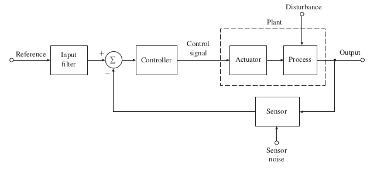

-
Feedback Control
2025-12-15
What is feedback control system? A feedback control system or close-loop control the system include a sensor to measure the output and uses feedback of the sensed value to infuence the control variable. A system that involves a person controlling a machine is called manual control. Asystems that involves machines only is called automatic control. (below is bloack diagram)

Block diagram of feedback control
If the controller does not use a measure of the system output being controlled in computing the control action to take, the system is called open-loop control(which I will discuss later).
- The process(or plant) whose output is to be controlled.
- The actuator whose output causes the process output to change.
- A reference command signal.
- Output sensors that measure these signals.
- The controller that implements the logic by which the control signal that commands the actuator is calculated.
Asimple feedback system consists of
A well-designed feedback control system will be stable, track a desired input or setpoint, reject disturbances, and be insensitive (or robust) to changes in the math model used for design. The theory and design techniques of control have come to be divided into two categories: classical control methods use Laplace transforms (or z-transform) and were the dominant methods for control design until modern control methods based on ODEs in state form were introduced into the field starting in the 1960s many connections have been discovered between the two categories and well-prepared engineers must be familiar with bothtechnigues.
-
Openloop Control
Fundamentally, there are two types of control loop: open-loop control (feedforward), and... -
Dynamic Models
What is the first step in analyzing and designing controls for a system? Developing a... -
Squre Root Algorithm
I wrote about feedback loops (see related posts). While exploring the concept, I came across a... -
Symmetrical Components Calculator
this article explains the fundamental concepts related to the topic and discusses the key principles engineers should understand.
Related Posts
References
- Feedback Control of Dynamic Systems Fanklin.Powell.Emami-Naeini